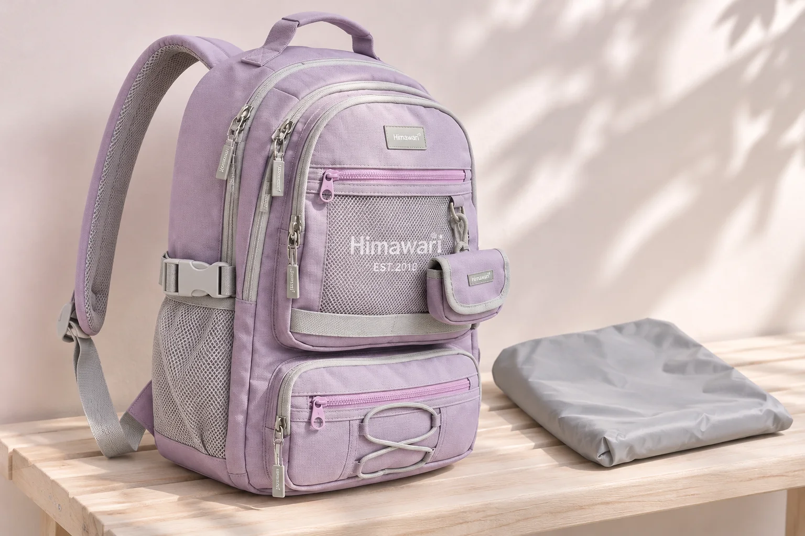

백팩 어깨끈 커버가 돌아가면, 겹친 면부터 다시 보기
백팩 어깨끈에 커버를 씌웠는데 걸을 때마다 닫힌 면이 어깨 쪽으로 돌아오는 일이 생길 수 있습니다. 처음에는 가운데에 두었던 봉제선이 옷깃 옆으로 옮겨 오기도 합니다.
이때 끈 길이부터 바꾸면 커버가 돌아간 상태와 가방이 놓이는 높이를 한꺼번에 바꾸게 됩니다. 가방을 내려놓고 커버의 안팎과 겹친 자리를 먼저 보면 무엇이 움직였는지 구분하기 쉽습니다.
No.9291 라벤더의 실제 사진에는 어깨에 걸린 넓은 끈과 아래쪽으로 이어지는 가는 조절 띠가 보입니다. 외부 크기는 가로 31 × 세로 45 × 폭 15cm입니다.
이 글의 별도 커버는 접촉면을 설명하는 연출 소품이며 No.9291의 구성품이나 호환이 확인된 액세서리가 아닙니다. 특정 커버의 권장 방향은 그 제품의 설치 안내를 먼저 따릅니다.
커버의 바깥면과 몸에 닿는 면
커버를 펼쳤다면 표면이 다른 두 면과 여밈 위치를 살펴봅니다. 설명에서 안팎을 정해 둔 제품은 그 방향이 기준입니다. 한쪽이 부드러워 보인다는 이유만으로 안쪽이라고 추측하지는 않습니다.
원단의 겉모양과 설치 방향은 다른 정보입니다. 안내가 불분명하면 판매처에 열린 상태와 닫힌 상태의 사진을 요청할 수 있습니다. 방향을 바꾸어 쓰도록 만든 제품인지도 확인할 부분입니다.
여밈이 겹치는 커버에서는 겹친 선과 봉제선이 꼭 같은 자리는 아닙니다. 커버 가장자리를 마감한 봉제선, 천을 이어 붙인 선, 닫을 때 포개지는 면을 따로 보면 어느 부분이 옷에 닿는지 설명하기 좋습니다. 손으로 만졌을 때 두껍게 느껴지는 지점이 있다면 그 위치를 기억해 둡니다. 촉감만으로 내부 소재나 쿠션 효과를 판정하려는 것이 아니라 접촉한 자리를 찾는 관찰입니다.
펼친 커버에서 본 위치를 닫힌 상태로 다시 맞춰 봅니다. 바깥에서는 로고가 가운데에 보여도 안쪽의 겹친 면은 한쪽으로 돌아가 있을 수도 있습니다. No.9291의 기존 어깨끈을 기준으로 위쪽과 아래쪽을 나눠 보면 커버의 어느 끝이 먼저 돌아갔는지 설명할 수 있습니다. 장식이 반듯하게 보이는지와 어깨에 닿는 면이 어떻게 놓이는지는 각각 볼 항목입니다.

같은 방향으로 감아도 좌우는 다르게 놓인다
커버 두 개를 같은 손동작으로 감으면 왼쪽과 오른쪽에서 겹친 가장자리가 서로 다른 쪽을 향할 수 있습니다. 가방을 벗어 놓고 두 끈을 나란히 보는 상태와 어깨에 올린 상태도 다릅니다. 한쪽 커버만 옷깃 가까이 닿는다면 양쪽 끈의 길이를 먼저 같게 만들기보다 커버의 여밈 방향을 비교합니다. 제품 안내에서 좌우를 구분하는지 확인한 뒤 현재 설치 상태를 맞춰 봅니다.
방향을 달리 설치할 수 있는 제품이라도 임의로 앞뒤를 뒤집어 쓰는 것과는 구별해야 합니다. 안내된 안팎을 유지하면서 여밈을 놓을 수 있는 위치가 어디인지 봅니다. 가방 끈이 굽은 모양을 억지로 펴서 커버를 돌리거나 원래 조절 부품을 빼지는 않습니다. 겹친 면을 옮겨도 같은 곳이 계속 불편하다면 방향만으로 해결되지 않는 조합일 수 있습니다.
어깨끈을 몸 앞으로 당겨 놓았을 때는 커버의 위치가 잠시 달라져 보일 수도 있습니다. 비교할 때는 가방을 같은 자세로 두고 양쪽을 봅니다. 한쪽은 바닥에 펼쳤고 다른 쪽은 손으로 들고 있는 사진을 비교하면 커버가 돌아간 정도를 판단하기 어렵습니다. 커버를 다시 정리하기 전 모습을 먼저 남겨두면 설치 방향과 사용 뒤의 위치를 구별할 수 있습니다.
올릴 때 돌아갔는지, 내릴 때 밀렸는지
옷깃에 닿는 부분을 찾았다면 가방을 메는 동작을 나누어 봅니다. 팔을 끼우기 전에 커버가 어느 쪽을 향했는지 보고 어깨에 올린 뒤 같은 끝의 위치를 확인합니다. 이 짧은 사이에 가장자리가 돌아왔다면 걷는 동안에만 생긴 변화는 아닙니다. 가방을 안정된 곳에서 받치고 한 끈씩 올리면 어느 순간에 움직였는지 관찰하기 쉽습니다.
커버를 고정하려고 원래 백팩 끈을 지나치게 짧게 만들 이유는 없습니다. 몸에 맞춰 둔 가방 높이와 커버가 머무는 위치를 구별해서 봅니다. 커버 안내에 고정 방법이 있다면 그 범위에서 사용하고 추가 테이프나 바느질을 임의로 더하지 않습니다. 어떤 면이 닿는지 확인하는 단계에서 가방의 원단과 봉제 상태까지 바꿀 필요는 없습니다.
어깨에서 끈이 빠지는 방향은 가방을 벗을 때 살펴볼 수 있습니다. 커버를 잡고 가방 전체를 내리는 습관이 있다면 커버만 먼저 아래로 움직일 수도 있습니다. 무엇을 잡고 내렸는지 기억해 두면 같은 위치를 반복해서 정리하는 이유를 살펴보기 좋습니다. 가방을 받칠 때에는 해당 제품에서 안내한 손잡이와 사용 방법을 따르고 커버를 운반용 손잡이로 간주하지 않습니다.
겉옷이 달라지면 같은 커버가 닿는 면도 다시 볼 만합니다. 높은 옷깃이나 두꺼운 후드가 생긴 날에는 커버 끝이 그 부위에 걸쳐 놓일 수 있습니다. 옷이 커버를 돌렸다고 원인을 단정하지 말고 이전과 달라진 접촉 위치를 봅니다. 커버를 쓰지 않았던 상태와 비교할 수 있다면 커버 때문에 더해진 접촉과 원래 끈의 놓임을 구분하는 데 도움이 됩니다.
덮지 않은 원래 끈을 기준으로 남기기
커버를 벗길 수 있는 제품이라면 원래 끈과 커버를 각각 살펴봅니다. 안쪽 여밈이 가방 끈의 표면을 누르거나 접힌 흔적이 남았는지 확인할 수 있습니다. 흔적이 보인다고 곧바로 손상이라고 결론 내리지는 않습니다.
표면이 달라진 위치와 사용한 방향을 함께 남기고 실제 상태가 궁금하면 가방과 커버의 판매처에 해당 자료로 문의하면 됩니다. No.9291처럼 메쉬나 별도 조절 띠가 함께 보이는 끈에서는 어느 면을 덮었는지 구체적으로 적을 수 있습니다. 넓은 패드의 중간인지 가는 띠로 이어지는 끝인지에 따라 사진에서 짚을 자리가 달라집니다. 백팩 전체와 해당 끈이 함께 보이는 사진은 위치를 설명하고 가까운 사진은 커버의 겹친 면을 보여줍니다. 두 사진을 같은 방향으로 남기면 왼쪽과 오른쪽을 혼동하기도 덜합니다.
커버를 다시 설치할지는 관찰한 상태와 각 제품 안내에 따라 정합니다. 돌려 놓아도 겹친 면이 계속 어깨 쪽으로 옮겨 오거나 조절 부품을 가린다면 그 조합을 계속 쓰는 것이 맞는지 문의할 수 있습니다.
커버를 씌운 외관을 유지하려고 불편한 방향을 고집할 필요는 없습니다. 커버의 권장 방향과 실제로 닿는 면이 서로 맞는지 확인한 상태가 다음 사용의 기준입니다.